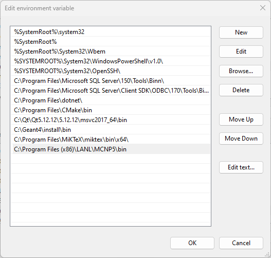
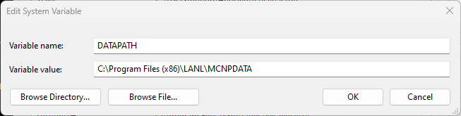
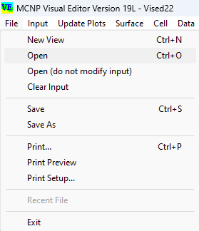
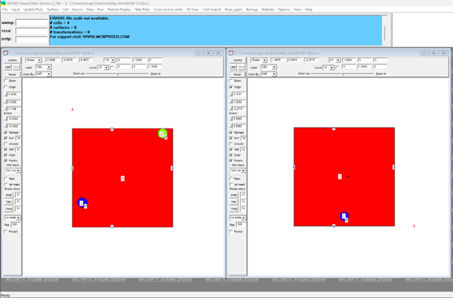
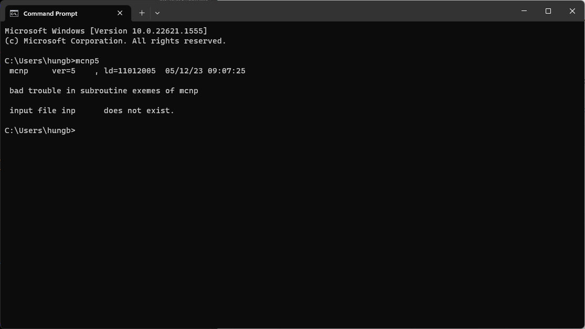

Hình 1.1. Minh họa bài toán ví dụ
Hình 1.1. Minh họa bài toán ví dụXét ví dụ sau: Có một quả cầu oxy đường kính 0,5 cm (Cell 1) và một quả cầu bằng sắt đường kính 0,5 cm (Cell 2) được đặt trong một khối hộp làm bằng carbon (Cell 3) với kích thước các cạnh là 10 cm. Cell 4 được mô tả như một “không gian bên ngoài hình hộp”. Một nguồn điểm đẳng hướng phát neutron 14 MeV được đặt tại tâm của khối cầu oxy nằm trong khối hộp carbon. Hãy tính tổng thông lượng và thông lượng theo năng lượng (bước tăng 1 MeV) từ 1 tới 14 MeV trong 2 trường hợp: - Trên bền mặt khối cầu sắt - Trung bình trong thể tích khối cầu sắt
Hình 1.1. Minh họa bài toán ví dụ
Hướng dẫn: Bước 1: Tạo một tệp tin dạng văn bản text mới có tên "VD11", lưu ý tệp tin này không có phần mở rộng.
Chú ý 1:
Tệp tin VD11 được tạo ra ở trên được gọi là tệp đầu vào (input file) của chương trình MCNP, nhiệm vụ của người dùng khi mô phỏng bằng MCNP là phải tạo được một tệp đầu vào chứa các dòng lệnh mô tả chi tiết hệ vật lý cần mô hình hóa.
Bước 2: Sao chép đoạn mã sau và dán vào tệp tin mới tạo và lưu lại. Lưu ý, có các dòng trống trong đoạn mã ví dụ này cần phải giữ nguyên gốc khi sao chép.
Sample Problem Input Deck
c Cell cards for sample problem
1 1 -0.0014 -7
2 2 -7.86 -8
3 3 -1.60 1 -2 -3 4 -5 6 7 8
4 0 -1:2:3:-4:5:-6
c End of cell cards for sample problem
c Beginning of Surfaces for cube
1 pz -5
2 pz 5
3 py 5
4 py -5
5 px 5
6 px -5
c End of cube surface
7 s 0 -4 -2.5 0.5 $ oxygen shpere
8 s 0 4 4.5 0.5 $ iron shpere
imp:n 1 1 1 0
sdef pos=0 -4 -2.5
f2:n 8 $ flux across surface 8
f4:n 2 $ track length in cell 2
e0 1 12i 14
m1 8016 1 $ oxygen 16
m2 26000 1 $ natural iron
m3 6000 1 $ carbon
nps 100000
Chú ý 2:
Trong đoạn mã trên cần lưu ý có 2 dòng trống được sử dụng để ngăn cách đoạn mã thành 3 đoạn, người ta đặt tên ba khối lần lượt là khối surface (surface block) – khối cell (cell block) – khối data (data block) và một dòng trống cuối cùng được sử dụng để thông báo sự kết thúc của tệp input.Dòng đầu tiên của đoạn mã được gọi là dòng tiêu đề, được sử dụng để ghi tiêu đề giải thích cho tệp input (tiêu đề là tùy chọn và người sử dụng có thể không cần khai báo).
Các dòng bắt đầu bằng kí tự “c” được gọi là dòng ghi chú mã MCNP sẽ bỏ qua tất cả các ký tự phía sau nó (chỉ trong một dòng), do đó kí tự “c” bắt buộc phải đặt ở đầu dòng. Các kí tự “$” chỉ được đặt ở vị trí kí tự thứ 6 – 80 trong một dòng, chương trình MCNP sẽ bỏ qua các kí tự sau nó. Sự khác biệt giữa hai cách ghi chú này là việc người sử dụng muốn ghi chủ bằng cả một dòng hay từ vị trí bất kì trên dòng.
Bước 3: Thử chạy chương trình sử dụng VisEd.
  Hình 1.2. Biến môi trường được cài đặt thành công
 Hình 1.4. Mở tệp đầu vào trên VisEd
Kích chọn vào các ô Surf, Cell, Color để xem hình học mô phỏng  Hình 1.5. Hình học của tệp đầu vào
Message Block // Optional
Blank Line Delimiter // Optional
Problem Title Card // Optional
Cell Card Block
...
Blank Line Delimiter
Surface Card Block
...
Blank Line Delimiter
Data Card Block
...
Blank Line Terminator //Optional, but recommended
Anything else // Optional
 Hình 1.7. Kiểm tra MCNP5 đã được cài đặt bằng cửa sổ dòng lệnh
mcnp5 KEYWORD=value ... execution_option(s) other_options
Trong đó: KEYWORD=value: sử dụng để đặt tên cho các tệp vào và ra execution_option(s): là các lệnh thao tác với tệp other_options: các thao tác khác khi mô phỏng
Chú ý 3: Trong bài này chúng ta sẽ không tìm hiểu hết các lệnh mà chỉ quan tâm tới một số lệnh rất cơ bản.
mcnp5 inp=viDu out=viDu.o runtpe=viDu.r
Chú ý 4:
- Ở dòng lệnh trên tên của tệp đầu ra là viDu.o và tên của tệp RUN là viDu.r, phần mở rộng của chúng (".o" và ".r") được thêm vào để giúp phân biệt từng loại tệp. Người sử dụng có thể không cần phần đuôi mở rộng tuy nhiên tên của chúng khi đó phải đặt khác nhau.
- Các kí tự inp, out và runtpe được gọi là các KEYWORD
mcnp5 i=viDu.i o=viDu.o r=viDu.r
mcnp5 n=viDu.i
Chú ý 5: Khi sử dụng KEYWORD n, lúc này các tệp OUTPUT và RUNTPE sẽ tự động tạo ra tên cho chúng.
Có thể sử dụng các execution_option(s) để thao tác với tệp INPUT:
Câu lệnh đầy đủ nhất để chạy tệp viDu là:
mcnp5 inp=viDu out=viDu.o runtpe=viDu.r ixr
Chú ý 6: Nếu không khai báo execution_option(s), thì mặc định chương trình sẽ hiểu là execution_option(s) = ixr.
mcnp5 inp=viDu out=viDu.o runtpe=viDu.r i
mcnp5 inp=viDu out=viDu.o runtpe=viDu.r ip
Chú ý 7: Để hiển thị đồ họa bằng tùy chọn ip, người dùng cần cài đặt XMing Server.
Tạo một tệp input mới có nội dung như sau và chạy mô phỏng theo hai cách.
testprob01 -- simple neutron problem to test some basic operations of mcnp.
1 1 -2.25 -1 imp:n=1 $ graphite ball
2 2 -8.95 1 -2 imp:n=1 $ copper shell
3 0 2 -3 imp:n=1 $ void space
4 0 3 imp:n=0 $ zero-importance outside world
1 sph 0 0 0 5
2 s 0 0 0 7
3 so 9
c biased isotropic point source at (0,0,0)
sdef erg d1 vec 0 1 0 dir d2 tme d5
sc5 equiprobable bin treatment for time distribution.
si5 -50 -10 3i 10 5m
sp5 -41 10
sb5 0 .1 .2 .3 1r .2 .1
sc1 flat energy spectrum from 1 to 14.1 mev.
si1 1.0 14.1
sp1 0 1
sc2 direction is biased toward the point detector.
sb2 -31 1.5
c
m2 29000.02 1
m1 nlib=40c 6012 1
awtab 6012. 11.8969
c xs3 6012.50c 11.8969 rmccs 0 3 92853 23390 0 0 2.53e-08
phys:n 14.2 .01
c
fc1 current across the graphite-copper interface.
f1:n 1.1
e1 .1 .5 .8 2 4 12 14.1
c1 -.866 -.5 0 .5 .866 1
em1 1 5i 7
cm1 8 4i 13
tm5 14 8i 23
t5 -50 -10 3i 10 5m 4m 5m 1.e20
fq1 c e
fc5 flux at a point in the void just outside the copper shell.
f5:n 0 8 0 0
f15:n 0 8 0 0
f25:n 0 8 0 0
e5 .1 .5 .8 2 4 12 14.1
c
cut:n 1.e20 .05 .05 .01 .01
nps 5000
print 10 30 35
prdmp 1250 1250 -1 1
dbcn j 1000 512 513 2j 100 9999 5 $ non-multitask version.
c dbcn 6j 100 9999 5 $ dbcn card for multitask version.
ptrac file=bin max=1000 meph=10 nps=1,100 cell=1 surface=1
#Tác giả